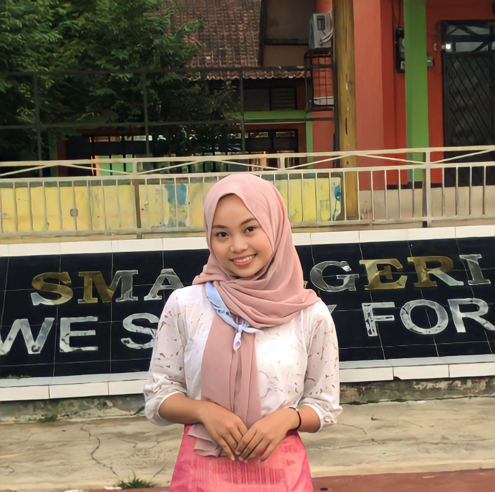

Saya adalah mahasiswa Sistem Informasi yang antusias dan berorientasi pada pengembangan teknologi informasi untuk memecahkan masalah bisnis. Memiliki pemahaman yang cukup dalam analisis sistem, pemrograman, serta pengelolaan data. Selain itu, saya memiliki kemampuan komunikasi yang baik dan bekerja dengan tim untuk mencapai tujuan bersama.
Selama studi, saya aktif terlibat dalam berbagai proyek yang berkaitan dengan pengembangan perangkat lunak dan implementasi sistem informasi. Saya selalu berusaha untuk meningkatkan keterampilan teknis melalui berbagai pelatihan, serta mengikuti perkembangan terbaru dalam teknologi. Saya juga memiliki minat yang besar dalam bidang kecerdasan buatan dan analisis data, dan saya berkomitmen untuk terus mengembangkan kemampuan tersebut dalam rangka memberikan solusi inovatif di dunia industri.
Saya percaya bahwa kombinasi antara kemampuan teknis yang kuat dan sikap proaktif dapat menjadikan saya seorang kontributor yang berharga dalam setiap proyek atau organisasi yang saya jalani.
Kampung Kanceuy, RT 17 RW 06, Desa Sanca Kecamatan Ciater Kabupaten Subang.